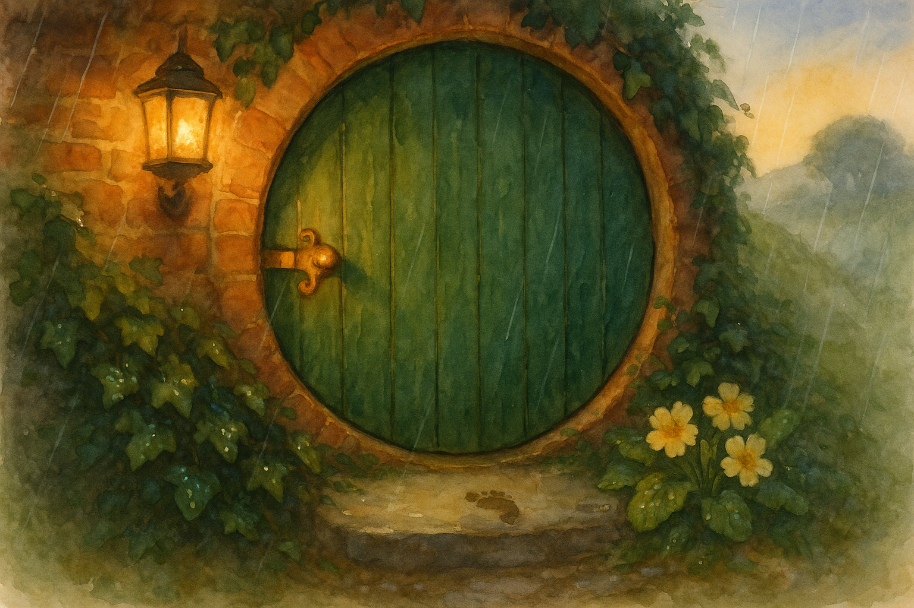

Fourth Age, in the Hill-country when the first spring rain softens the dust and the primroses return
There are folk who say that doors remember. Not the wood and iron, mind, but the going-in and coming-out: the laughter that bursts through, the slammed silence, the careful knock when someone is ashamed. In the Shire we pretend such talk is nonsense, because we are sensible; and then we oil our hinges and mind our thresholds, because we are sensible.
It happened in the Hill-country, not far from Hobbiton, in a smial with a round green door that had been painted so often you could count the years by the thickness of the gloss.
The door belonged to Jolly Hornblower, a hobbit of good temper and broad shoulders, who could lift a sack of flour as if it were a cushion and yet tread softly enough not to wake a cat. He had married May Brandybuck—distant kin, as nearly everyone is, and proud of it—and between them they had made a tidy place of it: bright tiles by the hearth, a rack for spoons, a place for everything and everything in its place (except, as May would sigh, the boots).
Now, Jolly’s door had a hinge that did not squeak. This may not sound like much of a marvel, but in a damp spring it is worth mentioning. Many doors in the Shire complain under their breath when the wind changes; some shriek like gulls if you do not oil them; and a few, the old ones set deep in the Hill, make no sound at all, as if they are listening and do not wish to be caught at it.
Jolly’s hinge was of that last sort: quiet as a mushroom at midnight.
It was not always so. In the first year after their wedding, the hinge had squeaked cheerfully—just a little eek like a mouse with an opinion—until May had stood in the doorway with her hands on her hips and said, “We shall have peace in this hole if it kills us.”
Jolly had laughed, kissed her brow, and oiled the hinge with a fine oil brought by a Dwarf-trader who swore it had been pressed from nuts that grew only in stony places. The squeak went away at once. For a week. Then it returned, but in a different way: not constant, not every time, but only when the door was opened by someone who had something kind to say and would not say it.
Of course they did not notice at first. Hobbits will hear a kettle coming to boil from three rooms away, but we can miss a truth that stands on the mat and clears its throat.
The first time was a small thing. Jolly had been down to the Water with a fishing-rod and came back with a string of silver-bright trout, proud as a rooster. He came up the path whistling, muddy to the knee, and May was in the garden with her sleeves rolled and her hair pinned up, turning the soil for beans.
“That’s a fine row,” Jolly said, and meant it. He also meant to say: You make this place fair. It feels like coming home even before I see the door. But May’s hands were dirty, and he had fish to show, and he thought he would say the rest in a moment, when he had washed and hung his hat.
He opened the door.
Eek.
May looked up sharply, for the hinge had not made a sound in months.
“Did you hear that?” she asked.
“Hear what?” Jolly said, with all the innocence of a hobbit who has stepped in a puddle and wishes the puddle would take the blame.
May wiped her hands on her apron and came to the threshold. She put her ear near the brass and opened and closed the door twice.
Nothing. Not a whisper.
“Odd,” she said, and went back to her beans.
Jolly stood with his hand on the latch a moment longer than he needed, feeling foolish. Then he turned back, mud and all, and said plainly, “May—those beans will make half the Hill jealous, and I’m glad you’re the one with the garden.”
May blinked. Then she smiled, the way the sun smiles when it breaks through cloud: slowly, as if it had been thinking about it.
Jolly went in again.
No squeak.
After that there were other times. Once, May was cross because Jolly had tracked clay through the hall, and Jolly was cross because May was cross, and between them a whole evening went by with the air thick as porridge. In the night, when they had both cooled, Jolly lay awake thinking of the way May had carried a pan of hot water to old Mrs. Goodchild that afternoon, without being asked and without expecting praise.
She’s a good one, he thought. A better hobbit than I deserve.
In the morning he rose early to fetch more water for the house. He did not say what he had thought, because he was shy of it in daylight.
He opened the door.
Eek.
This time the sound was sharper, like a complaint.
May was at the table with a loaf half-sliced. She looked up, bread-knife in hand.
“That hinge,” she said slowly, “has taken to talking.”
“It has not,” Jolly said, which was a poor answer even as he said it.
May set the knife down and regarded him. “Well? If it has a mind to tell us something, perhaps we should listen.”
Jolly’s ears went warm. He came back in, shut the door, and said, “I was thinking last night. About Mrs. Goodchild. And about you.”
May’s face softened, but she did not rescue him.
So he said it. Not in a grand speech, for hobbits are not built for grand speeches. He said, “You do good things without making a fuss. And I see it. And I’m proud to be in a hole with you.”
May let out a breath that might have been a laugh. “That will do,” she said, and poured him tea.
From then on, whenever the hinge squeaked, one of them would pause and think: What kind thing am I keeping in my pocket? Often the answer was as small as a pebble. Small kindnesses are like pebbles: you can carry them unnoticed, and yet if you keep enough of them you will find you cannot walk comfortably.
They began to make a game of it. If May came in from visiting her cousins and found Jolly waiting with the kettle already singing, the hinge would stay silent if she said, “That was thoughtful,” and squeak if she only hummed and went on.
If Jolly had mended a chair-leg and May admired the neatness of the join, the hinge would stay quiet; but if she looked and thought he does good work and said nothing because she did not wish him to grow proud, then the hinge would squeak as if to say: Let him be proud. Pride is not the same as vanity.
So it went, and the door, for the most part, was content.
But one spring there came a harder matter.
Jolly had a cousin—Largo Hornblower—who was clever with numbers and not so clever with people. Largo had borrowed money for a new roof and then borrowed again, and then borrowed one more time because the first two borrowings had not turned into good sense. Word of it went about, and with the word came the other thing that follows it: pity, sharpened at the tip.
May, who had a Brandybuck’s habit of speaking plain, said at supper, “Largo will ruin himself. Somebody should tell him to stop.”
Jolly chewed his bread and said, “Mm.”
He meant to say: He is my cousin. I ought to go. I ought to sit with him and tell him the truth kindly, before folk do it unkindly. But he was tired, and the thought of Largo’s stiff pride made his stomach sour. He decided to put it off a day.
The next morning he opened the door.
The hinge did not squeak.
It groaned.
A long, low, awful sound, like a tree bending under snow.
Jolly froze with his hand on the latch. He turned to May, who had come into the hall with her hair loose and her eyes still half-sleeping.
“That’s… new,” she said.
Jolly swallowed. “Aye.”
May studied his face the way you study a sky to see if it will rain. Then she nodded once. “Put on your coat,” she said. “And take the honey-cake I made yesterday. If you’re going to speak hard words, take something sweet to hold in your hand.”
So Jolly went. He walked the lane to Largo’s place, where the grass by the path was trampled as if many feet had come to look and then gone away again. He knocked. Largo opened the door only a crack.
“What do you want?” Largo said.
Jolly’s throat tightened. The easy thing would have been to say, “Nothing, only a visit,” and to let the day pass.
But he remembered the groan.
He held out the honey-cake. “I want to sit with you,” he said, “and I want to tell you something you won’t like. And I want you to know I’m not saying it to see you smaller. I’m saying it because you’re my cousin, and I’d rather you heard it from me than from whispers.”
Largo stared at the cake as if it were an insult. Then his eyes flicked up, and for a moment the cleverness went out of them and he looked simply tired.
“Come in, then,” he said.
They sat. Jolly spoke. Largo argued, and then he stopped arguing, and then he said a thing that sounded like a stone dropping into a well: “I didn’t know how to stop.”
Jolly stayed until the kettle was empty, and then he walked home in a slow rain.
When he reached his own round green door, he opened it.
The hinge was silent.
May was at the table with a mended sock in her lap. She did not ask questions at once, because she was wise.
Jolly hung up his coat, wiped his boots, and said, “Thank you for the cake. And thank you for knowing what I needed before I knew it.”
May’s needle paused. She looked at him with a small, pleased surprise, as if he had found a coin in the road and held it up.
“You’re welcome,” she said. “Now sit down before you drip on my floor.”
It is said (and I have heard it from three different fires, which is as good as proof) that if you go along certain lanes in the Shire when rain is soft and the light is low, you may hear a hinge squeak once, very faintly, though no door is opening at all.
That is not the hinge being haunted, mind. It is only the Shire reminding itself, in its own quiet way, that some words are like oil: cheap enough, if you use them in time—and costly, if you will not.
— Bilbo